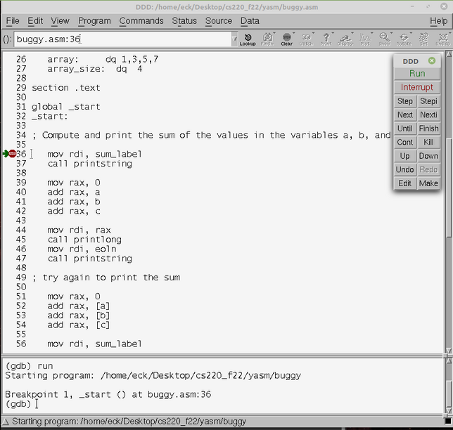

CPSC 220, Fall 2022
Lab 9: yasm and ddd Basics
This is our first lab using yasm to assemble x86-64 assembly language programs. It also introduces the ddd debugger. The main point of the lab is to start using these tools, not to do complex programming. We will be continuing with yasm for the rest of the semester.
Work from this lab is due at the start of next week's lab as usual. You will turn in one assembly language program, lab9.asm, and a text file containing your written answers to some questions. The preferred formats for the test file are plain text (lab9.txt) or PDF (lab9.pdf); a Microsoft Word (lab9.doc or lab9.docx) or LibreOffice (lab9.odt) word-processing document would also be OK. For the written part, be sure to answer all five questions; the fifth question is near the bottom of this web page. Please include your name in the file!
Starting the lab
For this lab, and for later labs in this course, you will need to use Linux. See this web page. for information about using Linux for the assembly language labs.
You can work on a Linux computer in Rosenberg 009 or Lansing 310. It is possible to access Linux remotely from your own computer. If you would like to try that, see the information about accessing Linux from Windows or Mac in the document referenced above.
You should log into Linux and open a Terminal where you can work on the command line (or connect to Linux using ssh). If you are just getting started with Linux, you might want to create a directory structure to hold your work for this course, such as with the commands:
mkdir cs220 cd cs220 mkdir lab9 cd lab9
This will leave you working in the lab9 folder. In any case, you will want to copy the files that you need for this lab into your account. If you are working in the directory where you want to put the files, you can do that with the command:
cp /classes/cs220/lab9-files .
Note the period at the end of the command, which represents the directory that you are working in. This will copy the files basicprint.asm, hello.asm, and buggy.asm into your current directory.
You need to be able to assemble, link, and run x86-64 assembly language programs (as discussed in Chapter 5 of Jorgensen). For example, to assemble basicprint.asm, use the command:
yasm -felf64 -gdwarf2 basicprint.asm
This command should give you no feedback, but it will create the assembled file basicprint.o in the current directory. That file is not a complete program; it can't be run. It defines certain subroutines that are used by the main programs in this lab. For example, it is used by hello.asm, which defines a main program that simply prints out "Hello World!". To assemble hello.asm and then link everything together into a complete program, use the commands:
yasm -felf64 -gdwarf2 hello.asm ld -g -o hello hello.o basicprint.o
This produces the program hello, which can be run using the command:
./hello
The program hello.asm is provided as an example only. You can try assembling, linking, and running it, and also reading it, but you don't need it for anything else in this lab.
Use the ddd Debugger
The ddd debugger is discussed in Chapter 6 of Jorgensen, and we have looked at it in class. For this part of the lab, you will apply ddd to a buggy program, buggy.asm.
You should compile, link, and run buggy.asm. (The commands to do so are in comments at the top of the file, if you need them.) If there were no bugs in the program, then the values for the three sums that it computes and prints would be 603, 603, and 16. But it gets all the answers wrong. You will use ddd to help you understand what goes wrong in each case. Even if you can see the errors without using the debugger, you should use it anyway to get familiar with some of the things that it can do. So, start debugging the program with the command:
ddd buggy
This will open a ddd window, showing the program buggy.asm. You should set a breakpoint on the first assembly language instruction, on line 36. (Right-click in the space to the left of the instruction. This should show a pop-up menu in which the first command is "Set Breakpoint." Use that command to set the breakpoint. You will see a Stop sign next to the command.) Now, click the "Run" button to start the program. It will pause at the breakpoint, and a green arrow will point to line containing the breakpoint, indicating the line that is next to be executed. The window should look something like this:

Click the "Next" button repeatedly to execute the program line-by-line. (The "Step" button is similar, but if you use "Step" on a subroutine call, it will step you into the subroutine code — which you don't need to do for this lab.)
You will want to watch the content of the registers as you step through the program. To open the widow that displays the registers, use the "Registers" command in the "Status" menu. Adjust the size of the Registers window so that you can see all three columns. The third column shows the content of (most) registers as decimal integers.

Note the code used in buggy.asm to output values. The program uses subroutines named "printstring" and "printlong" that are defined in basicprint.o. The assembly language instructions for printing a string are
mov rdi, <label> call printstring
where <label> represents the address of the string in memory, and the "call" instruction jumps to the printstring subroutine. The instructions for printing a 64-bit signed integer value are
mov rdi, <value> call printlong
where <value> represents the number to be printed.
The Debugging Assignment: You should step through the program, noting how the values in the registers change. You should answer the following questions as part of your written response to the lab (in a file such as lab9.txt or lab9.pdf).
Question 1: What exactly goes wrong in the first attempt to compute the sum of a, b, and c? (Carefully explain the difference between "mov rdi, a" and "mov rdi, [a]".)
Question 2: What goes wrong in the second attempt to print the sum of a, b, and c? Where exactly did the output value come from? How did the debugger help your figure that out? How could this part of the program be fixed?
Question 3: What goes wrong in the attempt to compute the sum of the list array, and how could it be fixed? (This question requires you to know a little about jump instructions.)
Question 4: The incorrect attempt to compute the sum of list gets 20 as the answer, instead of the correct value, 16. Where exactly did the extra 4 come from? Explain carefully and fully!
Programming Assignment
As your programming assignment for this lab, you will write a yasm assembly language program. The name of the program file should be lab9.asm. (One way to make a new file is to start the Text Editor program, from the Accessories submenu of the Start menu, and name the file when you save it.)
Before you do anything else, please add your name, in a comment, at the top of lab9.asm; this will make it easier for me to print your file and know who submitted it!
When assembled using yasm and linked to basicprint.o, lab9.asm should produce exactly the following output, and it must produce the output in the way specified below:
-1 18446744073709551615 FFFFFFFFFFFFFFFF The value of (y - x + 12) is: 37 The value of ((5*x + 3) * (y + z - w)) is: 118536 The quotient z/w is 15 and the remainder is 3 The sum of the list is 200
You will need to create the file lab9.asm in the same directory as basicprint.o. The file basicprint.asm defines functions printlong, printulong, printhex, and printstring for outputting 64-bit integers and strings; printlong outputs its parameter as a signed integer, printulong outputs an unsigned integer, and printhex outputs the number in hexadecimal form. To get access to these functions, the file lab9.asm has to include the line
extern printlong, printulong, printhex, printstring
and lab9.o has to be linked with basicprint.o. To assemble, link, and run your lab9 program, you need the commands
yasm -felf64 -gdwarf2 lab9.asm ld -g -o lab9 lab9.o basicprint.o ./lab9
Alternatively, you can run the program under the debugger using the command ddd lab9. Of course, when a command produces errors, you will have to correct them before you proceed. You will have to repeat both the yasm command and the ld command any time you make a change to lab9.asm. (Please remember that you can use the up-arrow key on the command line to access previously entered commands!)
For the first three lines of output from lab9.asm, you should output the number −1 three times, first as a signed integer, then as an unsigned integer, then in hexadecimal form (using printlong, printulong, and printhex). In each case, you should output a line feed after the number. This is easy, but you should also add your answer to the following question to your written response to the lab (in lab9.txt or lab9.pdf):
Question 5: Discuss the second and third lines of output from the lab9 program. When −1 is output in hexadecimal form, why is the result FFFFFFFFFFFFFFFF? What does the unsigned number 18446744073709551615 on the second line represent?
For the remaining lines of output from lab9.asm, you will need values for x, y, z, w, and list. Those values should be defined in the .data section of the program using the following code, which you can copy and paste from this web page into the .data section of lab9.asm:
x: dq 17 y: dq 42 z: dq 1398 w: dq 93 list: dq 100,27,53,20
You should compute the values of the expressions shown in the sample output above, and output those values along with the appropriate strings to produce exactly the output shown. The code that you write must compute the values of the expressions using the variables x, y, z, w, and list. That is, your program must compute the answers, using code that would work no matter what values the variables have. For the sum of the list, you must compute the sum using four add instructions; do not use a loop!
In class, we discussed the assembly language instructions for doing addition, subtraction, multiplication, and division of 64-bit numbers. For multiplication and division, there are different instructions for signed and for unsigned numbers. In this case, it doesn't matter which versions you use, since all of the numbers involved are small positive values. Remember that a single div instruction produces produces both the quotient and the remainder, and that the value in rdx must be zero before doing an unsigned division.